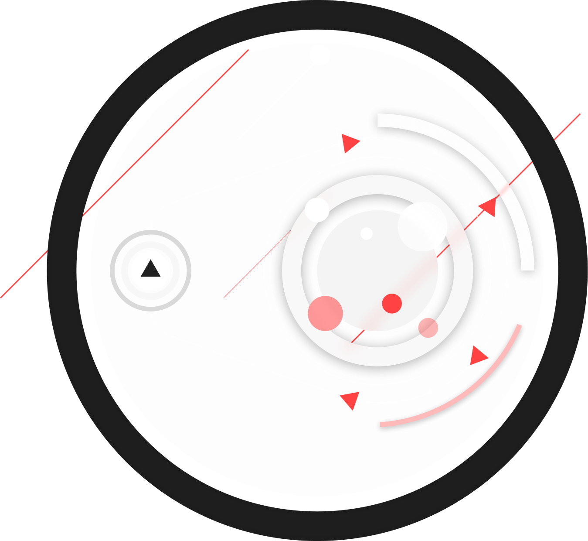

Узнайте, сколько
на самом деле стоит
ваша киберзащита
на самом деле стоит
ваша киберзащита
Узнайте, сколько
на самом деле стоит ваша киберзащита
на самом деле стоит ваша киберзащита
Методика Кибериспытания — это возможность объединить весь опыт индустрии кибербезопасности и сплотить вокруг единомышленников, которые будут её совершенствовать. Это поможет России и российскому бизнесу стать самым защищённым от киберугроз в мире.
Методика организована так, что вне зависимости от экспертов, площадки и исследователей, которые будут участвовать в Кибериспытании, организация и продукт получат объективную оценку, за какую сумму их можно взломать.
Методика Кибериспытания — это возможность объединить весь опыт индустрии кибербезопасности и сплотить вокруг единомышленников, которые будут её совершенствовать. Это поможет России и российскому бизнесу стать самым защищённым от киберугроз в мире.
Методика организована так, что вне зависимости от экспертов, площадки и исследователей, которые будут участвовать в Кибериспытании, организация и продукт получат объективную оценку, за какую сумму их можно взломать.
О методике
В методике подробно описаны все требования, участники, ограничения и этапы Кибериспытания: от подготовки и выбора площадки до итогов и оценки — точной суммы, за которую организацию можно взломать.
Рекомендаций, советов и готовых решений по взлому и защите в методике нет.
Подготовка
Чтобы оценить реальную степень защиты, нужна подготовка в 3 этапа:
Собрать команду топ-менеджеров и определить, что для бизнеса — критично. Например, полная остановка ресторана на день
Заполнить анкету о текущем уровне кибербезопасности по шаблону
Написать техзадание на Кибериспытание
по требованиям
по требованиям
Проверить организацию на устойчивость к кибератакам с помощью Pentest или Red Team
Без подготовки провести Кибериспытание невозможно.

Участники
В Кибериспытании участвуют организация-заказчик, площадка, исследователи и экспертный совет.
Организация-заказчик обращается за проведением Кибериспытания и определяет события, которые приведут к критическим уязвимостям. Обычно нужно участие CISO, финдиректора и CEO
Площадка предоставляет платформу, привлекаетисследователей и следит за техническим ходом Кибериспытания
Исследователи пытаются найти уязвимости в защите и доказать, какие системы можно взломать. Это группа из белых хакеров и ИБ-специалистов
Экспертный совет контролирует ход Кибериспытания, утверждает техзадание организации, составляет отчёт по итогам и решает спорные ситуации
Запуск и проведение
В зависимости от потребностей организации Кибериспытание длится не меньше 3-х месяцев и проходит в 3 фазы:
Привлечение. Главная задача фазы — привлечь не меньше 50 исследователей. Если не выйдет, Кибериспытание приостановят, чтобы пересмотреть условия
Первые результаты. Главная задача фазы — оценить активность исследователей: насколько быстро они продвигаются, чтобы найти уязвимости для возможного критического ущерба организации
Активная фаза. Исследователи продолжают искать уязвимости. Они регистрируют все события, которые могут повлиять на защиту организации, а не только критические уязвимости. Например, зафиксируют и доступ ко всему внутреннему хранилищу файлов, и доступ к учётной записи рядового сотрудника
Кибериспытание может проходить в постоянном режиме — без ограничения по времени.

Итоги и оценка
Экспертный совет готовит заключение о готовности организации и отчёт по итогам Кибериспытания. На основе заключения и отчёта организация получает скоринговый балл от 0 до 100.
Чем ниже балл, тем дешевле взломать организацию
0
Организация уязвима
для атак любителей
для атак любителей
100
Взломать
почти невозможно
почти невозможно
Содержание
Каждый раздел можно развернуть, чтобы прочитать полный текст методики.
Термины и определения
Bug Bounty (Баг Баунти) — принятый на рынке кибериспытаний способ оказания услуг поиска уязвимостей, который заключается в...
Полный текст
Скрыть
Критерий реализации недопустимого события организации (далее — критерий НС) — факт, технологическое условие или граничные значения длительности, масштаба или сценария воздействия (либо промежуточного результата), отражающие условие и возможность реализации варианта недопустимого события в повседневной деятельности организации. В отличие от инцидента информационной безопасности, критерий НС позволяет однозначно подтвердить и зафиксировать наступление недопустимого события.
Кибериспытание — анализ защищённости инфраструктуры, продукта или технологии Заказчика с целью оценки уровня защищенности и возможности реализации Недопустимых событий, оказываемые путём испытания инфраструктуры, продукта или технологи Заказчика силами независимых Исследователей или группы Исследователей, привлекаемых Площадкой, способами и приёмами, допущенными в соответствии с требованиями данной Методики и Технического задания.
Недопустимое событие(я) (далее — НС) — одно или несколько событий, которые могут происходить в результате несанкционированных действий третьих лиц, направленных на получение конфиденциальной информации, нарушающих или создающих угрозу нарушения целостности инфраструктуры, продукта или технологии, и (или) режима эксплуатации, которые могут приводить к значимым потерям (финансовым, репутационным, регуляторным и т.д.), способным оказать критическое влияние на деятельность компании, ее клиентов, партнеров и ключевых руководителей.
Организованная площадка (далее — Площадка) — юридическое лицо, обладающее необходимой инфраструктурой для привлечения Исследователей для проведения Кибериспытания в соответствии с настоящей Методикой и имеющее аккредитацию на предоставление услуг по проведению Кибериспытания Заказчикам с применением настоящей Методики кибериспытания.
Платформа – программное и (или) программно-аппаратное обеспечение Площадки, с помощью которого Площадка привлекает Исследователей и публикует условия Кибериспытания.
Период активного проведения Кибериспытания — время, в течение которого Исследователи ведут активные действия по Кибериспытанию. Из периода активного проведения Кибериспытания исключаются периоды, в течение которых услуги фактически не оказывались (по причине их приостановки, либо иным причинам).
Реестр недопустимых событий (далее — реестр НС) — список всех Недопустимых событий организации, подготовленных на основе Методики определения недопустимых событий (доступна по ссылке).
Отчёт по кибериспытанию – составленный Сертификационной организацией документ на основе отчета Площадки, являющийся результатом оказания услуг Кибериспытания, содержащий результаты Кибериспытания инфраструктуры, продукта или технологии Заказчика, выводы о возможности или невозможности реализации недопустимых событий по согласованному реестру.
Отчёт Площадки – составленный Площадкой документ на базе Информации от Исследователей, содержащий данные о ходе и результатах Кибериспытания, подготовленный по требованиям Методики кибериспытаний и подлежащей экспертизе со стороны Сертификационной организации.
Информация от Исследователей – совокупность всех предпринятых и задокументированных действий Исследователей с целью проверки возможности реализации Недопустимых событий.
Сертификационная организация — юридическое лицо, организующее сертификацию компании Площадки, как лица, оказывающего услуги по привлечению Исследователей для проведения Кибериспытания в соответствии с Методикой аккредитации на основании договора, заключаемого с Площадкой, а также проверяющее соответствие Технического задания, процесса Кибериспытания и Отчёта Площадки Методике кибериспытания, и готовящее Отчёт о кибериспытании на его основе на основании отдельного договора, заключаемого с Заказчиком.
Сертификат об успешном прохождении кибериспытания - документ, составленный Сертификационной организацией по итогам анализа отчёта Площадки, содержащий выводы о достижении целей Кибериспытания, описанных в Техническом задании, с определённым в нём сроком и условиями действия.
Заключение – составленный Сертификационной организацией документ по итогам анализа Отчёта Площадки, содержащий выводы об отсутствии достижения целей Кибериспытания.
Техническое задание (далее — ТЗ) — документ, разработанный Заказчиком и утверждённый Экспертным советом, определяющий состав услуг Кибериспытания, оказываемых Площадкой, а также порядок их оказания в инфраструктуре Заказчика или в отношении продукта, или технологии Заказчика.
Экспертный совет (далее — ЭС) — группа экспертов информационной безопасности, контролирующая соответствие проведения Площадкой Кибериспытания Методике кибериспытания, утверждающая Техническое задание и Отчёт о кибериспытаниях на основании договора с Заказчиком, являющаяся структурным подразделением Сертификационной организации и не являющаяся самостоятельным юридическим лицом.
Режим «Оценка» - базовый режим проведения «Кибериспытания, результатом которого является подготовленный отчет о проведенном испытании в интересах Заказчика и не предполагается выпуск сертификата. Режим «Оценка» позволяет гибко подходить к определению ключевых параметров «Кибериспытания», таких как вознаграждение Исследователям и минимальный срок нахождения на испытании.
Режим «Сертификация» - режим «Кибериспытания», при котором кроме отчета о проведенном испытании, Заказчик, в случае его успешного прохождения, получает сертификат, который может быть использован как подтверждение киберустойчивости в организации, которые признают сертификат АО «Кибериспытание» (например: страховые компании). Данный режим определяет более жёсткие требования к условиям проведения «Кибериспытания» и предполагает дополнительные действия, описанные в данной Методологии.
Скоринговый балл Кибериспытания – цифровое значение результатов Кибериспытание в пределах 0-100, которое показывает полноту исследования и прозрачность условий. Чем выше балл, тем более приближено исследование к реальному уровню киберугроз в контексте организации, продукта или технологии. Балл может использоваться для сравнения исторической динамики Кибериспытания организации и сравения с другими организациями.
Общие положения
Методика разработана, чтобы стандартизировать оценку эффективности защиты инфраструктуры, продукта или технологии...
Полный текст
Скрыть
Методика разработана, чтобы стандартизировать оценку эффективности защиты инфраструктуры, продукта или технологии Заказчика от действий злоумышленников. В документе описан процесс подготовки, проведения и оценки результатов Кибериспытания.
Цель Кибериспытания — получить наиболее точную и достоверную оценку степени защищенности инфраструктуры, продукта или технологии Заказчика от Недопустимых событий.
Методика предполагает, что перед проведением Кибериспытания Заказчик выполнил весь комплекс мер, необходимый для защиты от Недопустимых событий. Комплекс подготовки включает три этапа:
-
определение целей, то есть формирование Реестра недопустимых событий;
-
построение защиты на основе определенных целей;
-
внутренняя проверка эффективности защиты от Недопустимых событий и механизмов оперативного реагирования на угрозы информационной безопасности.
Сфера действия
Методика рекомендована АО «Кибериспытание» к использованию государственными органами власти федерального, муниципального и...
Полный текст
Скрыть
Методика рекомендована АО «Кибериспытание» к использованию государственными органами власти федерального, муниципального и местного уровней управления, предприятиями и организациями всех организационно-правовых форм и форм собственности.
Методика охватывает деятельность предприятий, организаций, органов власти по проведению «Кибериспытания». Методика включает описание действий при подготовке и проведении «Кибериспытания».
Методика не содержит рекомендаций Исследователям о том, какие конкретные действия необходимо выполнить, чтобы достичь Недопустимого события. Методика не содержит описания организационных и технических мер для защиты информации, а также рекомендаций по их выбору.
Порядок проведения
Методика рекомендована АО «Кибериспытание» к использованию государственными органами власти федерального, муниципального и...
Полный текст
Скрыть
В этом разделе описан весь процесс проведения «Кибериспытания» — от формирования заявки до подведения итогов. Диаграмма процесса представлена на Диаграмме 1.
{kind=link}
1. Решение о проведении
Методика охватывает деятельность предприятий, организаций, органов власти по проведению «Кибериспытания». Методика включает описание действий при подготовке и проведении «Кибериспытания».
-
Определены цели информационной безопасности на бизнес-языке. То есть сформулированы Недопустимые события организации Заказчика. Для описания Недопустимых события Заказчик может использовать Методику определения недопустимых событий (см ссылку) или другие термины и методики, которые позволяют однозначно определить Недопустимое событие и его параметры (согласно Методике определения недопустимых событий);
-
Проведен комплекс организационных, правовых и технологических мероприятий, которые обеспечат защиту от Недопустимых событий;
-
Пройдены внутренние испытания эффективности защиты от реализации Недопустимых событий.
Однако это не ограничивает возможность выхода Заказчика на Кибериспытание без выполнения вышеперечисленных этапов.
2. Подготовка к проведению
Обязательная подготовка к проведению Кибериспытания состоит из трех шагов:
-
Подготовка реестра Недопустимых событий, возможность реализации которых будет проверяться во время Кибериспытания (см. Методику определения недопустимых событий);
-
Заполнение стандартной анкеты о текущем состоянии функции информационной безопасности в организации (см. шаблон в приложении – «Анкета о текущем состоянии функции ИБ»)(далее - «Анкета);
-
Разработка Технического задания на проведение Кибериспытания в соответствии с настоящей Методикой (см. Требования к техническому заданию).
Эти шаги Заказчик может выполнить самостоятельно, руководствуясь Методикой, или привлечь третьих лиц с необходимыми компетенциями.
Если Заказчик не выполняет обязательную подготовку, то провести Кибериспытание невозможно.
3. Подача заявки
После подготовки Реестра недопустимых событий, Анкеты и Технического задания (далее — Артефакты), Заказчик подает заявку на проведение Кибериспытания.
Для рассмотрения заявки и начала процесса Кибериспытания, Сертификационная организация должна рассмотреть и одобрить Техническое задание Заказчика.
Для этого Заказчик и Сертификационная организация подписывают договор на экспертное сопровождение. Форму договора Сертификационная организация предоставляет по запросу Заказчика.
После подписания договора на экспертное сопровождение, Заказчик передает Артефакты Сертификационной организации тем способом, который обозначен в договоре.
4. Рассмотрение заявки
После получения требуемых Артефактов, Экспертный совет в течение 5 (пяти) рабочих дней рассматривает, насколько Техническое задание соответствует настоящей Методике. В результате Экспертный совет выполняет одно из действий:
-
Если Техническое задание соответствует Методике, Сертификационная организация отправляет Заказчику заключение, позволяющее запустить Кибериспытание.
-
Если Техническое задание не соответствует Методике, Сертификационная организация отправляет Заказчику список несоответствий и рекомендации, которые необходимо учесть перед повторной подачей заявки.
5. Выбор площадки проведения
Заказчик выбирает конкретную Площадку для привлечения Исследователей для проведения Кибериспытания из перечня аккредитованных Сертификационной организацией Площадок, представленных на сайте (http://cyberfy.ru/certified). Заказчик может запустить Кибериспытания одновременно у нескольких аккредитованных Сертификационной организацией Площадок. Если у Заказчика есть техническая возможность, в качестве Площадки может выступать Платформа Заказчика. Более подробно требования к Площадке описаны в разделе Требования к площадке.
6. Запуск
Если Кибериспытание проводится, Заказчик предоставляет площадке ТЗ на проведение Кибериспытания и положительное заключение Сертификационной организации.
Заказчик имеет право запустить Кибериспытание одновременно по всем Недопустимым событиям, по отдельному списку, либо одному Недопустимому событию.
Датой начала проведения Кибериспытания по Недопустимому событию(ям) считается дата его (их) публикации на Платформе Площадки. Если Кибериспытание запускается у нескольких Площадок, то датой начала считается дата размещения на Платформе первой из Площадок.
7. Подведение первых итогов
Если договор на Кибериспытание по конкретному Недопустимому событию заключен с Сертификационной организацией впервые, то минимальный срок Кибериспытания от начала проведения Кибериспытания до момента формирования Отчета по Кибериспытанию и передаче его Заказчику составляет 6 (шесть) полных месяцев, то есть 183 (сто восемьдесят три) календарных дня Активного периода Кибериспытания.
Когда проходит минимальный срок Кибериспытания по каждому Недопустимому событию, Площадка готовит Отчет Площадки и передает его в Сертификационную организацию в срок не более 5 (пяти) рабочих дней. Возможность передачи Отчётов Площадки в Сертификационную организацию прописывается в договоре между Заказчиком и Площадкой. На основании предоставленного Отчёта Площадки, Экспертный совет подводит итоги по проведенному Кибериспытанию по конкретным Недопустимым событиям, готовит Заключение или готовит Отчёт по «Кибериспытанию». Экспертный совет может запросить дополнительную информацию у Площадки/Заказчика, которая необходима для проведения оценки. В случае такого запроса, Заказчик/Площадка, должны предоставить запрошенную информацию в течение 5 (пяти) рабочих дней. Если невозможно предоставить такую информацию, Заказчик/Площадка должны предоставить письменный мотивированный отказ.
Экспертный совет в течение 10 (десяти) рабочих дней с момента получения Отчёта Площадки и всей необходимой информации, должен подготовить Заключение или сформировать Отчет по кибериспытанию. В эти сроки Сертификационная организация рассчитывает скоринговый балл, который принимает значение от 0 до 100, и позволяет дать сравнительную оценку проведенного Кибериспытания. Оценка может использоваться для сравнения с другими завершенными Кибериспытаниями.
Расчет скорингового балла Кибериспытания
Для расчета скорингового балла на вход подаются следующие данные:
-
Обезличенные оценки всех экспертов по каждой НС по категориям:
-
Количество исследователей;
-
Качество проверки;
-
Условия проведения.
-
-
Параметры Кибериспытания:
-
Количество Недопустимых событий в размещенном Кибериспытании;
-
Количество площадок, на которых размещено Кибериспытание;
-
Наличие ограничений по авторизации исследователей, участвующих в Кибериспытании;
-
Количество ограничений, наложенных на исследователей, по условиям Кибериспытания (авторизация, сертификаты, возраст, ЮЛ/ФЛ, социальная инженерия, фишинг, сегменты сети, уровень по модели OSI, онлайн/оффлайн, DDoS, третьи стороны, физическое проникновение и т.д.);
-
Размер суммы вознаграждения для исследователей;
-
Разница объявленной в начале Кибериспытания суммы вознаграждения для исследователей и рекомендованной Экспертным советом суммы вознаграждения;
-
Разница суммы вознаграждения для исследователей на третий месяц и рекомендованной Экспертным советом суммы вознаграждения;
-
Разница суммы вознаграждения для исследователей на конец Кибериспытания и рекомендованной Экспертным советом суммы вознаграждения;
-
Количество исследователей на конец первого месяца;
-
Количество исследователей на конец второго месяца;
-
Количество исследователей на конец четвертого месяца;
-
Количество исследователей на конец Кибериспытания;
-
Количество исследователей с Экспертным уровнем на конец Кибериспытания;
-
Количество исследователей со средним экспертным уровнем на конец Кибериспытания;
-
Количество значимых событий, предоставленных исследователями – успешных действий исследователей на конец Кибериспытания;
-
Количество предоставленных действий исследователей, которые не привели к успеху, но являются значимыми, на конец первого месяца Кибериспытания;
-
Количество предоставленных действий исследователей, которые не привели к успеху, но являются значимыми, на конец второго месяца Кибериспытания;
-
Количество предоставленных действий исследователей, которые не привели к успеху, но являются значимыми, на конец четвертого месяца Кибериспытания;
-
Количество предоставленных действий исследователей, которые не привели к успеху, но являются значимыми, на конец Кибериспытания;
-
Количество различных типов действий исследователей (событий) на конец Кибериспытания;
-
Количество подтвержденных 0-day уязвимостей, обнаруженных исследователями за период Кибериспытания;
-
Количество подтвержденных CVSS 9-10 уязвимостей, обнаруженных исследователями за период Кибериспытания;
-
Количество подтвержденных CVSS 7-8.9 уязвимостей, обнаруженных исследователями за период Кибериспытания;
-
Количество подтвержденных CVSS 0.1-6.9 уязвимостей, обнаруженных исследователями за период Кибериспытания;
-
Среднее количество шагов в предоставленных kill-chain (от 3 и более) с учетом реализованных Недопустимых событий, зарегистрированных значимых действий и действий, которые не привели к успеху, но являются значимыми;
-
Количество принятых изменений условий программы, которые изменяют техническое задание на Кибериспытание в сторону ужесточения требований за весь период Кибериспытания;
-
Количество принятых изменений условий программы, которые изменяют техническое задание на Кибериспытание в сторону открытости и прозрачности за весь период Кибериспытания;
-
Количество спорных ситуаций без привлечения арбитража экспертного совета;
-
Количество спорных ситуаций с привлечение арбитража экспертного совета.
-
Расчет балла производится скоринговой моделью, разработанной АО «Кибериспытание». Фактически она связывает оценки и параметры Кибериспытания с уровнем защищенности организации и полнотой оценки этой защищенности в конкретных условиях через систему скоринговых баллов. Для расчета балла средние обезличенные оценки по категориям (сумма всех оценок всех экспертов по всем НС для категории / (количество экспертов * количество НС)) корректируются на веса параметров Кибериспытания, которые определяют важность параметров в модели.
Веса параметров скоринговой модели Кибериспытания пересчитываются методами машинного обучения по мере получения данных о реализации недопустимых событий, но не реже, чем один раз в квартал.
Важность параметров в модели, без раскрытия численных значений их весов и формулы расчета:
Критерий
Важность
1
Количество Недопустимых событий в размещенном Кибериспытании
Средняя
2
Количество площадок, на которых размещено Кибериспытание
Высокая
3
Наличие ограничений по авторизации исследователей, участвующих в Кибериспытании
Средняя
4
Количество ограничений, наложенных на исследователей, по условиям Кибериспытания (авторизация, сертификаты, возраст, ЮЛ/ФЛ, социальная инженерия, фишинг, сегменты сети, уровень по модели OSI, онлайн/оффлайн, DDoS, третьи стороны, физическое проникновение и т.д.)
Высокая
5
Размер суммы вознаграждения для исследователей
Низкая
6
Разница объявленной в начале Кибериспытания суммы вознаграждения для исследователей и рекомендованной Экспертным советом суммы вознаграждения
Высокая
7
Разница суммы вознаграждения для исследователей на третий месяц и рекомендованной Экспертным советом суммы вознаграждения
Низкая
8
Разница суммы вознаграждения для исследователей на конец Кибериспытания и рекомендованной Экспертным советом суммы вознаграждения
Средняя
9
Количество исследователей на конец первого месяца
Высокая
10
Количество исследователей на конец второго месяца
Средняя
11
Количество исследователей на конец четвертого месяца
Низкая
12
Количество исследователей на конец Кибериспытания
Высокая
13
Количество исследователей с Экспертным уровнем на конец Кибериспытания
Высокая
14
Количество исследователей со средним экспертным уровнем на конец Кибериспытания
Средняя
15
Количество значимых событий, предоставленных исследователями – успешных действий исследователей на конец Кибериспытания
Средняя
16
Количество предоставленных действий исследователей, которые не привели к успеху, но являются значимыми, на конец первого месяца Кибериспытания
Низкая
17
Количество предоставленных действий исследователей, которые не привели к успеху, но являются значимыми, на конец второго месяца Кибериспытания
Средняя
18
Количество предоставленных действий исследователей, которые не привели к успеху, но являются значимыми, на конец четвертого месяца Кибериспытания
Низкая
19
Количество предоставленных действий исследователей, которые не привели к успеху, но являются значимыми, на конец Кибериспытания
Средняя
20
Количество различных типов действий исследователей (событий) на конец Кибериспытания
Высокая
21
Количество подтвержденных 0-day уязвимостей, обнаруженных исследователями за период Кибериспытания
Высокая
22
Количество подтвержденных CVSS 9-10 уязвимостей, обнаруженных исследователями за период Кибериспытания
Высокая
23
Количество подтвержденных CVSS 7-8.9 уязвимостей, обнаруженных исследователями за период Кибериспытания
Средняя
24
Количество подтвержденных CVSS 0.1-6.9 уязвимостей, обнаруженных исследователями за период Кибериспытания
Низкая
25
Среднее количество шагов в предоставленных kill-chain (от 3 и более) с учетом реализованных Недопустимых событий, зарегистрированных значимых действий и действий, которые не привели к успеху, но являются значимыми
Средняя
26
Количество принятых изменений условий программы, которые изменяют техническое задание на Кибериспытание в сторону ужесточения требований за весь период Кибериспытания
Средняя
27
Количество принятых изменений условий программы, которые изменяют техническое задание на Кибериспытание в сторону открытости и прозрачности за весь период Кибериспытания
Высокая
28
Количество спорных ситуаций без привлечения арбитража экспертного совета
Низкая
29
Количество спорных ситуаций с привлечение арбитража экспертного совета
Средняя
Результаты расчета нормируются и приводятся к шкале, которая может принимать значение от 0 до 100 балло – на выходе модели формируется интегрированный показатель – скоринговый балл.
Выпуск сертификата
В случае, если «Кибериспытание» запущенно в режиме сертификации, и Экспертный совет признает его успешным, Сертификационная организация выпускает Сертификат об успешном прохождении «Кибериспытания» по НС/списку НС Заказчика.
Сертификат об успешном прохождении Кибериспытания направляются Заказчику и Площадке в течение 10 (десяти) рабочих дней одновременно с Отчётом по кибериспытанию.
Срок действия Сертификата об успешном прохождении кибериспытания составляет 60 (шестьдесят) календарных дней с момента его выпуска. Если Заказчик заключил с Сертификационной организацией договор о постоянном Кибериспытании и Исследователи реализовали Недопустимое событие в срок до 60 (шестидесяти) календарных дней с момента выпуска Сертификата об успешном прохождении Кибериспытания по этому Недопустимому событию, такой Сертификат об успешном прохождении Кибериспытания отзывается.
Если Экспертный совет не признает Кибериспытание успешным полностью или в части, Сертификационная организация выпускает Заключение по НС/списку НС Заказчика, в котором содержится подробное разъяснение причин признания Кибериспытания не пройденным полностью или в части.
8. Постоянный режим
Методика закрепляет постоянный режим Кибериспытания после его первого успешного результата, то есть после получения Отчета об успешно пройденном «Кибериспытании» (испытании, по которому не была реализованы недопустимые события) или Сертификата об успешном прохождении кибериспытания, в случае режима сертификации. Постоянный режим позволяет Заказчикам проводить непрерывную оценку своей защищенности с учетом проходящих в организации изменений (изменений бизнес-процессов, технологий и информационной безопасности).
В режиме постоянного Кибериспытания Площадка готовит Отчет Площадки каждые 183 (сто восемьдесят три) календарных дня Активного периода. Площадка отправляет Отчет Площадки в течение 5 (пяти) рабочих дней после завершения 183 (сто восемьдесят три) календарных дня Активного периода. На основании Отчёта Площадки Экспертный совет подводит результаты (см. Подведение первых итогов), готовит Отчет о кибериспытании и выпускает Сертификат об успешном прохождении Кибериспытания (в случае режима сертификации) или Заключение, и передаёт данные результаты Заказчику.
Если Экспертный совет признает Кибериспытание, проводимое в режиме сертификации, успешным полностью или в части, Сертификационная организация выпускает Сертификат об успешном прохождении Кибериспытания по НС/списку НС Заказчика, который действует на условиях, указанных в Сертификате.
Если Экспертный совет не признает Кибериспытание неуспешным полностью, Сертификационная организация выпускает Заключение по НС/списку НС Заказчика, в котором содержится подробное разъяснение причин признания Кибериспытания не пройденным.
После подведения итогов Кибериспытание продолжается циклично в таком же порядке следующие 6 (шесть) месяцев – 183 (сто восемьдесят три) календарных дня. По результатам каждого периода рассчитывается скоринговый балл, который принимает значение от 0 до 100, и позволяет дать сравнительную оценку проведенного Кибериспытания. Эта оценка может быть использована для сравнения с другими завершенными Кибериспытаниями.
Режим постоянного Кибериспытания проходит согласно актуальному ТЗ на Кибериспытание, которое утверждено ЭС.
9. Приостановка
Решение о приостановке Кибериспытания может принять Заказчик, Площадка, Сертификационная организация или Экспертный совет.
Кибериспытание считается приостановленным, если:
-
Заказчик обратился к Площадке или Сертификационной организации с заявкой на приостановку Кибериспытания;
-
Площадка по техническим причинам не может проводить Кибериспытание;
-
Экспертный совет решил приостановить Кибериспытание.
Период приостановки не учитывается при расчете срока Активного периода проведения Кибериспытания. Если приостановка Кибериспытания является предметом спора между Заказчиком и Площадкой, итоговое решение о приостановке принимает Экспертный совет в срок не более 5 (пяти) рабочих дней с момента получения обращения.
Если в период первичного проведения (6 полных месяцев или 183 календарных дня), Кибериспытание приостанавливались по инициативе Заказчика более 3 (трёх) раз, Площадка вправе потребовать компенсации в размере не более 1% от совокупной стоимости вознаграждения, согласованного в договоре.
10. Остановка
Заказчик имеет право остановить Кибериспытание, однако должен уведомить Площадку и Сертификационную организацию в срок не менее чем за 30 (тридцать) рабочих дней до даты планируемой остановки.
Заказчик несет финансовые обязательства по выплате вознаграждения Исследователям в течение всего срока до даты прекращения Кибериспытания, указанной в уведомлении.
Действия при реализации недопустимых событий
Реализация Недопустимого события (НС) на Кибериспытании фиксируется, когда Исследователь предоставляет необходимую Информацию...
Полный текст
Скрыть
Реализация Недопустимого события на Кибериспытании фиксируется, когда Исследователь предоставляет необходимую Информацию от Исследователя, которая подтверждает достижение критерия реализации этого НС, определенного в ТЗ.
1. Действия исследователя
Если Исследователь достиг критерия НС, он\она должен в течение 60 (шестидесяти) минут уведомить об этом Площадку, а также передать ей соответствующие сведения о достижении НС либо критерия НС.
Также в течение 3 (трёх) часов с момента достижения критерия НС, Исследователь должен предоставить отчет, содержащий:
-
информацию о достижении НС из реестра;
-
перечень сведений, уже переданных Площадке;
-
перечень всех дополнительных действий и событий, необходимых для достижения НС, либо критерия НС. Примеры таких событий: компрометация узлов и компонентов инфраструктуры Заказчика, компрометация учетных записей пользователей, время реализации НС и время компрометации других компонентов, предшествующих реализации НС.
2. Действия площадки
После получения информации о достижении критерия НС от Исследователя, Площадка в течении 60 (шестидесяти) минут информирует об этом Заказчика.
После получения отчета от Исследователя и его проверки, Площадка в течение 1 (одного) рабочего дня передает Заказчику всю необходимую документацию:
-
отчет о достижении Недопустимого события;
-
полученные от Исследователей сведения, необходимые для достижения НС;
-
иные документы на усмотрение Площадки.
3. Действия заказчика
После получения информации от Площадки Заказчик обязан в течение 3 (трёх) рабочих дней совершить одно из действий:
-
согласиться с информацией, поступившей от Площадки, и признать наступление критериев НС;
-
оспорить информацию, предоставив мотивированный ответ с описанием критериев, по которым Заказчик не считает НС наступившим.
4. Действия экспертного совета
Если между Заказчиком и Площадкой (в том числе представляющей интересы Исследователя) возникает спор, касающийся сведений из отчета о достижении критериев НС, Площадка в течение 1 (одного) дня после получения ответа от Заказчика предоставляет в Экспертный совет следующие документы:
-
отчет о достижении Недопустимого события;
-
полученные от Исследователей сведения, необходимые для достижения НС
-
иные документы на усмотрение Площадки;
-
ответ Заказчика.
5. Дальнейшие действия участников
Если критерий наступления НС считается подтвержденным, Кибериспытание по НС приостанавливаются Заказчиком или Сертификационной организацией на время, необходимое Заказчику, чтобы устранить уязвимости, приведшие к наступлению НС либо критерия НС, и произвести выплаты Исследователю.
Если Экспертный совет не признает Критерий наступления НС подтвержденным, Кибериспытание может быть продолжено в соответствии с утвержденным ранее ТЗ.
После подтверждения Критерия наступления НС, Площадка информирует об этом все заинтересованные стороны, указанные в ТЗ в разделе «Уведомления в случае реализации НС».
В дальнейшем, подтвержденный Критерий НС может быть повторно вынесен на Кибериспытание. Если Заказчик не изменял Реестр НС и Техническое задание на проведение Кибериспытания, никаких дополнительных действий не требуется.
В случае существенных изменений условий проведения Кибериспытания по НС, Заказчик по нему готовит ТЗ и согласует с Экспертным советом.
Учет значимых действий исследователей
Методика обязывает Исследователей вести учет всех своих действий, которые могут или могли повлечь Значимые события, и Значимых...
Полный текст
Скрыть
Методика обязывает Исследователей вести учет всех своих действий, которые могут или могли повлечь Значимые события, и Значимых событий, в рамках участия в Кибериспытании на Платформе Площадки.
Это необходимо, чтобы защитить интересы как Заказчика, так и Исследователя.
Информация о таких действиях и Значимых событиях является конфиденциальной и Площадка не в праве разглашать имеющуюся у нее информацию Заказчику без письменного разрешения Исследователя, являющегося владельцем данной информации.
Информация об указанных действиях и Значимых событиях используется для разрешения спорных ситуаций, а также в период подведения итогов Кибериспытания Экспертным советом.
Если Заказчик подозревает хакерскую атаку, он вправе запросить информацию о действиях и Значимых событиях Исследователей у Площадки, только для того, чтобы выяснить, является ли возможная атака частью активности Исследователей. На основании имеющихся данных Площадка может ответить «Является» или «Не является», не раскрывая дополнительную информацию.
1. Значимые события
Исследователю необходимо сохранять сведения о наступлении любого Значимого события. Таковым считается любое событие, которое может повлиять на деятельность Заказчика или результат Кибериспытания. Данная Методика определяет следующие значимые события:
-
получение доступа к недоступным ранее учетным записям (УЗ);
-
получение доступа к ранее недоступным узлам сети;
-
повышение привилегий в операционной системе;
-
активное противодействие средств защиты, либо обход средства защиты;
-
действия, которые повлекли за собой нарушение работы сервиса или хоста;
-
подтвержденное Заказчиком наступление Недопустимого события или Критериев НС после подтверждения Экспертного совета.
Заказчик имеет право определить дополнительные Значимые события в ТЗ, в разделе 12.6 «Расширенный список значимых событий».
2. Перечень сведений, обязательных для сохранения
В рамках сохранения и возможности дальнейшего уведомления, Исследователь должен быть готов сохранить и при необходимости предоставить Площадке:
-
IP-адрес, с которого происходит эксплуатация уязвимости;
-
утилита, эксплоит, номер эксплоита, применяемый для эксплуатации уязвимости;
-
приблизительное время эксплуатации/получения данных (с точностью до 30 минут);
-
подтверждение факта эксплуатации, позволяющие его однозначно определить.
При передаче третьему лицу эти данные должны быть маскированы.
Исследователи должны сохранять сведения о своих действиях для передачи третьему лицу в случаях, перечисленных ниже:
-
достижение НС;
-
компрометация учетной записи пользователя системы Заказчика;
-
компрометация компонента инфраструктуры, продукта или технологии Заказчика;
-
сканирование внутренних систем Заказчика с использованием скомпрометированных компонент инфраструктуры, продукта или технологии, и/или скомпрометированных УЗ;
-
нарушение работоспособности одного из компонентов инфраструктуры, продукта или технологии Заказчика.
В случае достижения одного из вышеперечисленных пунктов Исследователи обязаны сохранить эту информацию Площадке не позднее 60 минут после достижения одного из этих событий.
Для скомпрометированных учетных записей пользователя/системы Исследователи должны сохранять:
-
пароль, маскированный с читаемым первым и последним символом;
-
логин;
-
домен, маскированный;
-
роль, маскированная;
-
краткое описание получения доступа к данным.
Для скомпрометированных компонент Исследователи должны сохранять, например, следующие данные:
-
скриншот вызова команд ifconfig, whoami, uname;
-
имя сервиса/службы/хоста;
-
скриншот, позволяющий определить привилегии в учетной записи, с которой осуществлена компрометация системы;
-
маскированные персональные данные;
-
краткое описание эксплуатации.
В случае нарушения работоспособности системы Исследователи должны сохранять:
-
имя сервиса/службы/хоста/файла, IP-адрес или любой другой идентификатор, позволяющий определить компонент системы;
-
скриншот, подтверждающий нарушение работоспособности системы;
-
маскированные персональные данные;
-
краткое описание эксплуатации, повлекшей нарушение работоспособности системы.
В случае достижения НС Исследователи должны сохранять:
-
имя сервиса/службы/хоста, IP-адрес или любой другой идентификатор, позволяющий определить компонент системы;
-
скриншот, подтверждающий достижение НС;
-
перечень необходимых доказательств согласно условиям, описанным в программе «Кибериспытания».
-
краткое описание эксплуатации с указанием цепочки предыдущих событий.
3. Сроки регистрации значимых событий
Методика определяет максимальный срок регистрации Значимого события равный 24 часам с момента реализации Значимого события.
4. Санкции в случае нарушения правил учета
Если Исследователь систематически (два и более раз) нарушает правила по учету значимых событий, к нему\к ней будут применены санкционные меры — от понижения рейтинга, если предусмотрено Платформой Площакди, до закрытия возможности участия в Кибериспытании.
Дополнительно, если Исследователь реализовал НС, но на Платформе Площадки отсутствуют зарегистрированные Значимые события, то Исследователь получает 50% от суммы вознаграждения за реализацию НС.
Мониторинг
Площадка несет ответственность за непрерывный мониторинг хода Кибериспытания по следующим параметрам:...
Полный текст
Скрыть
Площадка несет ответственность за непрерывный мониторинг хода Кибериспытания по следующим параметрам:
Параметр
Действия
Комментарий
1.
Соответствие
количества активных
Исследователей на
Кибериспытании
требованиям ТЗ.
1. Если количество
активных Исследователей на Кибериспытании за
последние 2 недели было ниже минимального порога, определенного в ТЗ, Площадка в течение 1 рабочего дня уведомляет об этом Заказчика и Сертификационную
организацию.
2. В момент, когда количество активных Исследователей Кибериспытания возвращается на требуемый уровень, Площадка в течение 1 (одного) рабочего дня уведомляет Заказчика и Сертификационную организацию.
Для расчета активных Исследователей см. П 10.2 «Порядок подсчета активных исследователей».
2.
Активные спорные
ситуации между
Заказчиком и
Исследователями.
В случае возникновения
спорной ситуации между
Заказчиком и
Исследователями,
Площадка в течение 1
(одного) рабочего дня
уведомляет
Сертификационную организацию.
3.
Приостановка
Кибериспытания.
В случае приостановки
Кибериспытания по
решению
Заказчика/Площадки/Эксп
ертного совета,
Площадка в течение 1
(одного) рабочего дня
уведомляет всех
участников
Кибериспытания
(Заказчика,
Сертификационную
организацию,
Исследователей).
Ограничения
Кибериспытание максимально приближено к реальной ситуации, которая может возникнуть в инфраструктуре, продукте или...
Полный текст
Скрыть
Кибериспытание максимально приближено к реальной ситуации, которая может возникнуть в инфраструктуре, продукте или технологии Заказчика. Это предполагает, что Кибериспытание не имеет ограничений по действиям Исследователей. Однако, Заказчик в праве определить список ограничений в ТЗ на Кибериспытания. Этот список будет рассмотрен Экспертным советом в рамках рассмотрения заявки. Экспертный совет может согласовать или не согласовать отдельные ограничения или список целиком.
Заказчик имеет право активно противодействовать Исследователям любым способом, которым он может противодействовать злоумышленникам, с учетом согласованных в ТЗ ограничений.
Заказчик не имеет права ограничивать Исследователю доступ к своей инфраструктуре, кроме как в рамках регулярных процедур по защите инфраструктуры.
1. Ограничения для исследователей
-
DdoS атаки допустимы только при наличии в перечне НС события, связанного с доступностью инфраструктуры Заказчика.
-
Запрещается реализовывать НС, если возможно ограничиться сбором доказательств, подтверждающих наличие возможности у Исследователя реализовать это НС.
-
Запрещается реализовывать НС, если собраны доказательства, подтверждающие, что у Исследователя есть возможность реализовать это НС.
-
Исследователь не должен выходить за рамки обозначенные в ТЗ, не может атаковать инфраструктуру партнеров Заказчика с целью реализовать НС в инфраструктуре Заказчика. Партнеры Заказчика всегда являются «out of scope».
-
Исследователь не вправе загружать на свои системы персональные данные, конфиденциальную информацию Заказчика без предварительного разрешения (например условий программы Кибериспытания опубликованных на Платформе Площадки). Если есть предварительное разрешение, сохранять на стороне Исследователя, можно только ограниченную часть данных в маскированном формате и слепок этих данных (например, хеш-сумму от одной записи в базе данных заказчика, дополнительно скриншот маскированных данных, хеш сумму файла, содержащего конфиденциальные данные дополнительно маскированный скриншот конфиденциальных данных).
2. Ограничения для заказчика
-
В случае простоя одного или более сервисов, влияющих на наступление НС, срок испытания для данного НС увеличивается на общее количество дней простоя.
-
Информацию от Площадки по Исследователям разрешено использовать только для определения этичности/неэтичности Исследователей.
-
Запрещено любое воздействие на Исследователей кроме их блокировки и иного противодействия в инфраструктуре Заказчика при обнаружении подозрительной активности.
-
Заказчик гарантирует и может подтвердить при возникновении такой необходимости, что обозначенные в ТЗ сетевые узлы и части инфраструктуры находятся в собственности и под управлением Заказчика.
3. Запрещенные действия
В ходе проведения Кибериспытания запрещены действия, влекущие за собой или подразумевающие:
-
нарушение УК РФ;
-
атаку на сторонние системы, не имеющие отношения к тестируемой компании;
-
физическое воздействие либо угрозу физического воздействия на сотрудников компании и их близких;
-
шантаж, подкуп сотрудников компании и их близких;
-
атаку на личные устройства сотрудников компании;
-
кражу и порчу имущества компании;
-
вывод из строя систем тестируемой компании, включая удаление и повреждение баз данных, шифрование данных.
Изменение условий проведения по инициативе заказчика
1. Предварительное согласование изменений...
Полный текст
Скрыть
1. Предварительное согласование изменений
-
Если в ходе Кибериспытания Заказчик хочет внести изменения в условия его проведения, он должен обратиться к Площадке для оценки значимости вносимых изменений и их влияния на дальнейший ход Кибериспытания. Для этого Заказчик в свободной форме предоставляет всю необходимую информации, касающуюся изменения.
-
Площадка от лица Исследователей в срок до 5 (пяти) рабочих дней определяет значимость вносимых изменений и их влияние на ход Кибериспытания.
-
Если Площадка признает изменения незначительными, Площадка уведомляет Заказчика в течение 1 (одного) рабочего дня с момента принятия такого решения.
-
На основе этого уведомления Заказчик может внести запрошенные им изменения.
-
Если Площадка признает изменения значительными, Заказчик не может внести их, пока не согласует с Экспертным советом. Для этого Заказчик обращается в Экспертный совет, предоставляет актуальное ТЗ и информацию о планируемых изменениях. Экспертный совет согласует изменения в срок до 5 (пяти) рабочих дней. Возможные результаты согласования см. 9.3 Действия Экспертного совета.
2. Обнаружение изменений исследователем
-
Исследователь обязан уведомить Площадку, если считает, что Заказчик в ходе Кибериспытания внес значимые изменения в условия его проведения. Вместе с уведомлением Исследователь предоставляет необходимые подтверждения этого изменения и обоснование его значимости.
-
Площадка в течение 1 (одного) рабочего дня должна уведомить Заказчика и потребовать отменить все внесенные изменения.
-
Если Заказчик согласен с правомерностью запроса Площадки, Заказчик должен отменить внесенные изменения в течение 72 часов.
-
Если Заказчик не согласен с оценкой значимости внесенных изменений, он в течение 72 часов предоставляет Площадке письменный мотивированный отказ от отмены изменений.
-
На основе полученной от Заказчика информации, Площадка в течение 1 (одного) рабочего дня обращается в Экспертный совет для разрешения конфликта. Площадка предоставляет Экспертному совету:
-
ТЗ;
-
информацию от Исследователя(ей);
-
информацию от Заказчика.
-
3. Действия экспертного совета
Экспертный совет рассматривает запрос Заказчика на внесение изменений в условия проведения Кибериспытания в соответствии с п. 10.1. или информацию об уже внесенных Заказчиком изменениях в соответствии с п 10.2. В обоих случаях Экспертный совет должен дать ответ на запрос в срок до 5 (пяти) рабочих дней с момента получения запроса. Существует 3 возможных исхода:
-
Изменение условий Кибериспытания признается правомерным и не имеющим существенного влияния. Заказчик имеет право применить изменения.
Если изменения уже были внесены, Заказчик не отменяет ранее внесенные им изменения. Период с момента внесения изменений до момента принятия положительного решения Экспертного совета по изменению идет в учет активного периода Кибериспытания. -
Изменение условий Кибериспытания признается неправомерным и имеющим существенное влияние, Заказчик не имеет права применить изменения.
Если изменения уже были внесены, Заказчик должен отменить все внесенные изменения в срок до 72 часов. Период с момента внесения изменений до отмены изменений не идет в учет активного периода Кибериспытания. -
Ознакомившись с доводами Заказчика, Экспертный совет предлагает альтернативный вариант изменений.
Если изменения уже были внесены, Заказчик должен отменить все внесенные изменения в срок до 72 часов, период с момента внесения изменений до отмены изменений не идет в учет Активного периода Кибериспытания. Заказчик имеет право внести альтернативные изменения, предложенные ЭС.
Если Заказчик не согласен с мнением ЭС, Кибериспытание приостанавливается для поиска решения.
Требования к активности исследователей
Оценка эффективности проведения Кибериспытания строится на основе анализа реальных действий Исследователей при достижении...
Полный текст
Скрыть
Оценка эффективности проведения Кибериспытания строится на основе анализа реальных действий Исследователей при достижении Критериев НС, которые в свою очередь подсчитываются на основе зарегистрированных на Платформе Площадки Значимых событий (см. п 7.1). Методика определяет минимальные требования к объему проведенных действия, необходимых для успешной оценки защищенности.
1. Первичное проведение Кибериспытания
Для оценки эффективности хода Кибериспытания до момента получения Сертификата о его успешном прохождении, первые 6 месяцев его проведения разбиваются на 3 этапа. По окончанию каждого из них предпринимается ряд возможных действий в зависимости от хода проведения Кибериспытания. В случае приостановки Кибериспытания, время текущего этапа также приостанавливается.
Этап 1 - «Привлечение»
Данный этап проходит в течение первых 2 месяцев с даты запуска Кибериспытания. По его окончанию оценивается количество привлеченных на Кибериспытание Исследователей (активность исследователей не оценивается). Для этого Площадка предоставляет информацию о количестве зарегистрированных на Кибериспытание Исследователей.
Для каждого НС Методика устанавливает минимальное количество Исследователей — не менее 50 человек, зарегистрированных для участия в Кибериспытании. Данное минимальное число является суммарным значением, по всем Площадкам, у которых запущенно Кибериспытание по конкретному НС.
В случае, если по итогу этапа, количество зарегистрированных на Кибериспытание Исследователей меньше минимально установленного значения, Площадкам дается еще семь календарных дней для привлечения дополнительных Исследователей. Если после этих дополнительных дней количество зарегистрированных Исследователей все еще ниже требуемого минимального числа, Кибериспытание приостанавливается, выносится вопрос по пересмотру суммы вознаграждения или изменения иных требований в условиях проведения Кибериспытания.
Этап 2 - «Первые результаты»
Данный этап проходит в течение последующих 2 месяцев проведения Кибериспытания. На данном этапе оценивается активность Исследователей и количество зарегистрированных Значимых событий. Предполагается, что в ходе данного этапа должно быть зафиксировано достаточно Значимых событий для того, чтобы считать Кибериспытания успешно проходящими.
Для каждого НС Методика устанавливает минимальное количество Исследователей — не менее 20 Значимых событий, зарегистрированных на Площадке. Данное минимальное число является суммарным значением, по всем Площадкам, где запущенно Кибериспытание по конкретному НС. В случае, если в ходе данного этапа было зарегистрировано целевое значение Значимых событий, Кибериспытание продолжается без изменений.
В случае, если по итогам данного этапа, количество зарегистрированных Значимых событий меньше минимально требуемого значения, Методика требует изменение суммы вознаграждения, согласно таблице ниже.
Доля зарегистрированных Значимых
событий от целевого значения, в %
событий от целевого значения, в %
Изменение величины вознаграждения к текущему значению
80% и более
+10%
50-80%
+20%
20-50%
+30%
20% и менее
+50%
Таблица 1. Изменение вознаграждения в зависимости от числа зарегистрированных Значимых событий
Этап 3 - «Активная фаза»
Данный этап проходит в течение заключительных 2 месяцев Кибериспытания. На данном этапе оценивается активность Исследователей – предполагается, что количество Значимых событий должно быть не менее оценки целевого значения на предыдущем этапе.
Дополнительно к этому, если по результатам подсчета Значимых событий на предыдущем этапе менялась сумма вознаграждения, вводится промежуточная дата подсчета Значимых событий, в дату завершения первого месяца этапа 3. В эту дату проверяется эффект изменения вознаграждения. Если в результате подсчета количество зарегистрированных событий за месяц работ на этапе 3 равен половине минимального значения (10 Значимых событий), услуги по Кибериспытанию продолжаются без изменений.
Режим «Сертификации»
Данный этап проходит в течение заключительных 2 месяцев Кибериспытания. На данном этапе оценивается активность Исследователей – предполагается, что количество Значимых событий должно быть не менее оценки целевого значения на предыдущем этапе.
-
что делал Исследователь (попытка получения доступа, рассылка, атака);
-
когда делал (дата);
-
что получилось в результате (краткое описание).
Все вышеобозначенные действия для успешного проведения Кибериспытания Площадка должна проводить самостоятельно, при необходимости привлекая Заказчика или Экспертный совет.
2. Постоянный режим
Для постоянного режима проведения Кибериспытания Методикой не определяется необходимое минимальное количество зарегистрированных Значимых событий. Но рекомендуется вести их учет для оценки полноты исследуемых векторов атак и киберугроз.
Требования к вознаграждению
1. Установка начальной суммы вознаграждения исследователям...
Полный текст
Скрыть
1. Установка начальной суммы вознаграждения исследователям
Сумма вознаграждение исследователям является ключевым фактором успешного проведения «Кибериспытания», ее правильное определение позволяет привлечь достаточное количество квалифицированных исследователей для объективной оценки защищенности. Сумма вознаграждения и логика ее формирования рассматривается и согласовывается экспертным советом. В случае, если экспертный совет не видит возможным получение необходимого результата «Кибериспытания» за обозначенное в ТЗ вознаграждение, он выносит вопрос изменения начальной суммы вознаграждения исследователям.
1.1 Режим сертификации
Режим сертификации требует максимально точной оценки киберзащищенности, что накладывает дополнительные требования к начальной сумме вознаграждения исследователям, которая определяется по следующей формуле:
Режим сертификации требует максимально точной оценки киберзащищенности, что накладывает дополнительные требования к начальной сумме вознаграждения исследователям, которая определяется по следующей формуле:
S(Вознаграждения)=S(Значимых событий)*S(Bug Bounty)*K(Кибериспытание)*K(Текущий уровень ИБ);
где:
S(Значимых событий) - среднее количество значимых событий в цепочке до достижения недопустимого события, определенных в сценариях реализации НС;
S(Bug Bounty) - средняя стоимость вознаграждения за критическую уязвимость на программах Bug Bounty, проводимых Заказчиком или другими компаниями, имеющими соизмеримый уровень зрелости ИБ;
S(Кибериспытание) - коэффициент «Кибериспытания», предполагающий получение вознаграждения только при реализации НС, а не отдельных уязвимостей. На текущий момент равен 2,5;
S(Текущий уровень ИБ) - коэффициент текущего уровня ИБ организации, рассчитанный на основе предоставленной Анкеты заказчика (расчет коэффициента, так же доступен в Анкете). Показатели информационной безопасности для оценки отбираются в соответствии с отраслевой принадлежностью Заказчика. Коэффициент текущего уровня ИБ организации определяется по значению R. Определение K(Текущий уровень ИБ) по оценке R:
-
Если оценка R лежит в интервале от 0 до 0,25, то K(Текущий уровень ИБ)= 0.
-
Если оценка R лежит в интервале от 0,25 до 0,5, то K(Текущий уровень ИБ)= 1.
-
Если оценка R лежит в интервале от 0,5 до 0,7, то K(Текущий уровень ИБ)= 2.
-
Если оценка R лежит в интервале от 0,7 до 0,85, то K(Текущий уровень ИБ)= 3.
-
Если оценка R лежит в интервале от 0,85 до 0,95, то K(Текущий уровень ИБ)= 4.
-
Если оценка R лежит в интервале от 0,95 до 1, то K(Текущий уровень ИБ)= 5.
Пример расчета суммы вознаграждения:
-
S(Значимых событий) = 5 (количество значимых событий в цепочке для достижения НС)
-
S(Bug Bounty) = 800 тыс. руб.
-
S(Кибериспытание) = 2,5
-
S((Текущий уровень ИБ) = 3
-
S(Вознаграждения) = 5 * 800 000 * 2,5 * 3 = 30 млн руб.)
1.2 Режим оценки
В случае режима оценки, Заказчик самостоятельно определяет величину вознаграждения Исследователям за успешную реализацию НС на Кибериспытании, обеспечивая необходимого количества участников.
Рекомендуемый коридор вознаграждения: от 1 до 10 млн руб.
2. Порядок пересмотра суммы вознаграждения
Во время первичного размещения на Кибериспытании (первые 6 месяцев) пересмотр суммы вознаграждения зависит от активности Исследователей, участвующих в Кибериспытании. Порядок пересмотра суммы вознаграждения приведен в разделе 11.1 настоящей Методики.
Если первичное Кибериспытание признано успешным на основе дополнительной информации, предоставленной Исследователями о действиях, не приведших к успеху (см. раздел 11.1 Этап 3), что в свою очередь означает не достижение минимального порога зарегистрированных Значимых событий, то происходит пересмотр вознаграждения для постоянного режима Кибериспытания согласно таблице 1 из раздела 11.1.
3. Внешние факторы, влияющие на сумму вознаграждения
Если первичное Кибериспытание признано успешным на основе дополнительной информации, предоставленной Исследователями о действиях, не приведших к успеху (см. раздел 11.1 Этап 3), чтМетодика предусматривает внешние факторы, которые могут увеличивать требования к минимальной сумме начального вознаграждения исследователям, однако эти факторы не могут устанавливать сумму меньше, чем определенные в разделе 12.1. Так например, страховые компании, предлагающие киберстрахование на основе полученного сертификата о «Кибериспытании» могут привязать минимальную сумму вознаграждения исследователям к сумме страхового покрытия.о в свою очередь означает не достижение минимального порога зарегистрированных Значимых событий, то происходит пересмотр вознаграждения для постоянного режима Кибериспытания согласно таблице 1 из раздела 11.1.
4. Вознаграждение исследователям при сборе неуспешных значимых событий
Согласно разделу 11.1 «Первичное проведение Кибериспытания» (Этап 3 – «Активная фаза»), если количество значимых событий не достигло требуемого Методикой количества, Исследователи должны внести информацию об неуспешных значимых действиях, которые они осуществляли в рамках проводимого «Кибериспытания». Для поощрения исследователей, из бюджета выделенного на вознаграждения за НС, выделяется сумма равная 10% от первичной суммы вознаграждения за НС, которая выплачивается в следующей пропорции ТОП5 участников, предоставившим наиболее полные и достоверные данные по своим попыткам реализации НС, проверенные и выбранные Экспертным советом:
-
Первое место: 5%;
-
Второе место: 2,5%;
-
Третье место: 1,25%;
-
Четвертое место: 0,75%;
-
Пятое место: 0,5%.
Требования к техническому заданию (ТЗ)
Раздел регламентирует подход к написанию ТЗ для проведения Кибериспытания. Соответствие ТЗ требованиям этого раздела...
Полный текст
Скрыть
1. Информация о заказчике
Данный раздел ТЗ должен содержать общую информацию о Заказчике услуг (название, ИНН, место регистрации), позволяющую произвести его однозначную идентификацию.
2. Место проведения
Заказчик имеет возможность выбрать один из двух вариантов проведения Кибериспытания:
-
организованная Площадка из списка аккредитованных Площадок http://cyberfy.ru/certified/;
-
собственная инфраструктура.
В рамках ТЗ Заказчик может указать как конкретную Площадку, на которой он намерен провести Кибериспытание, так и выбрать один из двух приведенных выше вариантов без указания конкретной Площадки. Настоящая Методика не запрещает проводить Кибериспытания у более чем одной Площадки одновременно, в том числе для различных перечней Недопустимых событий.
3. Недопустимые события
Раздел ТЗ описывает список Недопустимых событий, подготовленный для запуска Кибериспытания и содержит следующую информацию:
3.1 Название
Название НС, кратко описывающее его суть.
Пример:
Кража денежных средств со счета Заказчика.
3.2 Детальное описание
Подробное описание значимой для эффективного проведения Кибериспытания информации, включая бизнес контекст, значимые метрики и т.д.
Пример:
В компании XYZ существуют процессы, связанные с движением денег: оплата услуг контрагентов, покупки лицензий, выдача заработной платы и многие другие. Исследователю необходимо разобраться, как работают бизнес-процессы, какие системы в них участвуют, и попробовать перевести деньги на любой подконтрольный себе счет.
3.3 Критерий достижения НС
Критерии наступления Недопустимого события, позволяющие однозначно определить ситуацию, когда исследователь достиг результата.
Методика рекомендует определять такой критерий через бизнес-метрики и показатели, на основе самого Недопустимого события, но с порогом негативного влияния на компанию Заказчика существенно ниже уровня, когда событие становится недопустимым. Это позволит не раскрывать какую-либо дополнительную информацию технического характера и провести испытания в условиях максимально приближенных к реальным.
Примеры:
Недопустимое событие
Критерий наступления НС
1.
Кража денежных средств со счета компании в размере 500 млн. руб.
Исследователь должен перевести до 2499 рублей со счета Заказчика на любой подконтрольный себе счет. Транзакция должна быть инициирована Исследователем и пройти через банк. Перевод денег сотруднику Заказчика не считается реализацией Недопустимого события.
2.
Кража персональных данных клиентов Заказчика в объеме более 100 тыс. записей.
Кража персональных данных клиентов Заказчика в объеме более 100 тыс. записей.
3.
Остановка дистанционного обслуживания клиентов Заказчика за счет блокирования работы мобильного приложения Заказчика на срок более трех рабочих дней.
Исследователь должен внести новый элемент (детальная спецификация) в продуктовый каталог мобильного приложения Заказчика.
3.4 Вознаграждение
Вознаграждение и детальное описание правил и условий, в соответствии с которыми Заказчик будет производить выплаты Исследователям в случае достижения условий НС. Правила выплат не должны противоречить правилам выбранной Площадки.
Кроме того, ТЗ должно содержать правила пересмотра величины вознаграждения в ходе Кибериспытания, не противоречащие п.12 настоящей Методики. В ТЗ должны быть подробно описаны правила изменения величины вознаграждения, порядок изменения и все необходимые условия, приводящие к нему.
3.5 Ограничения
Ограничения действий Исследователей при проведении Кибериспытания регламентируются п.8 данной Методики, однако Заказчик может определить дополнительные ограничения, но в пределах возможности проведения Кибериспытания Исследователями.
3.6 Срок запуска
Срок запуска Кибериспытания по каждому Недопустимому событию. Кибериспытания по разным НС могут запускаться одновременно или по отдельности.
4. Требования к исследователям
Раздел ТЗ описывает список обязательных и дополнительных требований к Исследователям, которые может устанавливать Заказчик.
4.1 Авторизация
Методика определяет следующие варианты авторизации Исследователей:
-
все, зарегистрированные на Платформе Площадки;
-
зарегистрированные только по приглашениям;
-
зарегистрированные и прошедшие верификацию через Госуслуги;.
-
зарегистрированные юридические лица.
4.2 Другие требования
Заказчик имеет право указать дополнительные требования к Исследователям. Важно учитывать, что это усложняет привлечение Исследователей в необходимом числе.
Такими требованиями могут быть:
-
ограничение по возрасту;
-
наличие специализированных сертификатов;
-
участие сотрудников компании;
-
И т.п.
5. Требования к экспертному совету
Заказчики имеет право уточнить требования к Экспертам, которые проводят экспертизу Кибериспытания, на предмет порядка разрешения конфликта интересов, но не может явно ограничивать или указывать конкретных Экспертов.
6. Уведомление
Раздел ТЗ определяет список адресатов, параметры и порядок их уведомления согласно п. 5 и п. 7.
7. Расширенный список значимых событий
Для анализа активности Исследователей, Методика в разделе 6.1 определяет список Значимых событий. Однако Заказчик вправе определить дополнительный список Значимых для него событий в данной разделе ТЗ.
8. Вознаграждение за значимые события
Заказчик имеет право установить сумму вознаграждения за значимые для него Недопустимые события, указав их в ТЗ.
9. Дополнительные разделы
ТЗ может включать в себя неограниченное количество дополнительных разделов, способствующих эффективному проведению Кибериспытания. Содержание этих разделов не должно противоречить настоящей Методике.
Требования к площадке
Настоящая Методика позволяет проводить Кибериспытание как на Организованной площадке, так и с использованием платформ Заказчика...
Полный текст
Скрыть
1. Виды площадок
Настоящая Методика позволяет проводить Кибериспытание как на Организованной площадке, так и с использованием платформ Заказчика.
Организованные площадки проходят аккредитацию в Сертификационной организации и имеют право предоставлять услуги по проведению Кибериспытания третьим лицам.
Заказчики, выбравшие вариант проведения Кибериспытания на собственной платформе, не имеют права предоставлять услуги по проведению Кибериспытания с применением настоящей Методики третьим лицам (кроме дочерних компаний) и должны соответствовать требованиям, предъявляемым к Площадке Методикой.
2. Требования безопасности
Площадка проведения Кибериспытания должна соответствовать следующим требованиям безопасности:
-
иметь активное Кибериспытание, либо программу поиска уязвимостей (bug bounty) для собственной Платформы Площадки.
-
обеспечивать конфиденциальность передаваемой и хранящейся на ней информации.
3. Функциональные требования
Площадка должна соответствовать следующим функциональным требованиям:
-
Обеспечивать возможность управления доступом Исследователей к «Кибериспытанию» согласно п.13.4.1.
-
Обеспечить возможность единоразовой регистрации исследователя на «Кибериспытании» с указанием даты регистрации.
-
Обеспечить возможность категоризации исследователей по группам ( Новичек, Специалист, Эксперт) по заранее согласованному с Сертификационной организацией правилу.
-
Обеспечивать возможность учета Значимых действий Исследователей согласно п. 7. Со следующими атрибутами:
-
Исследователь;
-
Дата значимого события (не разрешается вносить события позднее чем 24 часа от текущего момента);
-
Тип значимого события согласно п.7.1;
-
Свободное поле, с детальной информацией о действиях исследователя.
-
-
Обеспечивать возможность мониторинга Кибериспытания согласно п.8.
-
Иметь возможность публикации в сети Интернет информации о проводимых Кибериспытаниях и программах Bug Bounty в рамках собственной инфраструктуры.
-
Иметь возможность для сбора и анализа данных о количестве Исследователей и их активностях в рамках отдельных временных периодов, согласно требованиям определенным к формату отчета Площадки.
3. Дополнительные требования для организованных площадок
-
Доказанный успешный опыт проведения Bug Bounty не менее двух лет.
-
Обеспечение круглосуточной поддержки и возможности реагирования на отчеты Исследователей и обращения Заказчика.
Требования к защите конфиденциальности
В вопросах защиты конфиденциальной информации отношения Заказчика, Исследователя, Площадки и Сертификационной организации...
Полный текст
Скрыть
В вопросах защиты конфиденциальной информации отношения Заказчика, Исследователя, Площадки и Сертификационной организации регламентируются подписываемыми ими коммерческими документами и (или) некоммерческими соглашениями.
1. Требования к площадке
Площадка не имеет права разглашать сведения об Исследователях, их действиях, а также о ходе проведения Кибериспытания Заказчику, кроме как в случаях, предусмотренных законодательством РФ и настоящей Методикой.
2. Требования к исследователям
Исследователь не имеет права разглашать сведения о Заказчике, его инфраструктуре, уязвимостях, а также о ходе проведения Кибериспытания Заказчику, кроме как в случаях, предусмотренных законодательством РФ и настоящей Методикой, а также для целей проведения Кибериспытания.
3. Требования к экспертному совету и сертификационной организации
Экспертный совет не имеет права разглашать информацию об участниках, ходе проведения Кибериспытания, его результатах, а также свойствах инфраструктуры, продукта или технологии Заказчика, кроме как в случаях, предусмотренных законодательством РФ и настоящей Методикой.
Требования к отчету площадки по результатам
Отчет Площадки — это документ,подготовленный Площадкой, детально и подробно описывающий ход проведения Кибериспытания...
Полный текст
Скрыть
Отчет Площадки — это документ,подготовленный Площадкой, детально и подробно описывающий ход проведения Кибериспытания Исследователями. Он нужен для того, чтобы все заинтересованные стороны могли оценить ход проведения Кибериспытания и его результат.
-
дата начала периода проведения Кибериспытания;
-
дата готовности Отчета Площадки;
-
количество дней Активного периода;
-
информация по реализованных НС в период проведения (если имелись);
-
среднее недельное количество активных Исследователей на Кибериспытании за весь учетный период с даты подачи последнего Отчета Площадки;
-
информацию обо всех Значимых событиях, зарегистрированных Исследователями на Платформе Площадки;
-
перечень всех спорных ситуаций, возникших между Исследователями и Площадкой в учетный период;
-
информацию о количестве и характере обращений Заказчика к Площадке;
-
информацию о внесенных в условия Кибериспытания дополнительных ограничений, отсутствующих в согласованном ТЗ.
Экспертный совет должен оценить предоставленный Отчет Площадки на предмет полноты, возможных нарушений условий проведения Кибериспытания и соответствие настоящей Методике. На основе этой оценки ЭС комментирует Отчет о Кибериспытании и выносит решение о соответствии или несоответствии ТЗ проведенного Кибериспытания.
Режим Bug Bounty
Методика проведения Кибериспытания предполагает возможность произвести коммерческий обмен найденных Исследователем...
Полный текст
Скрыть
Методика проведения Кибериспытания предполагает возможность произвести коммерческий обмен найденных Исследователем уязвимостей на денежное вознаграждение со стороны Заказчика.
Что может быть обменено
Могут быть обменяны уязвимости, которые определены Заказчиком в ТЗ к проводимых Кибериспытаниях и зарегистрированные в качестве Значимых событий не позднее дня завершения Кибериспытания и начала подведения итогов.
Когда
Обмен может быть осуществлен после завершения Кибериспытания, в момент, когда оно находится на оценке Экспертного совета. Для этого Исследователь должен уведомить Площадку о своем намерении.
Что происходит, если несколько исследователей подали информацию по одной уязвимости
В случае, если несколько Исследователей подали запрос на обмен по одной и той же уязвимости, то приоритет в обмене принадлежит Исследователю, который первым зарегистрировала уязвимость на Платформе (т.е. дата фиксации Значимого события этого Исследователя наступила первой). Если уязвимости были зарегистрированы в один день, то вознаграждение делится пропорционально между всеми Исследователями, зарегистрировавшими уязвимость.
Как определяется сумма вознаграждения
Сумма вознаграждения определяется Заказчиком по каждому типу уязвимости и указывается в ТЗ на Кибериспытание в разделе 13.7 «Вознаграждение за значимые события».
Последствия действий иной силы
Если в ходе Кибериспытания обнаруживается активное и существенное воздействие злоумышленников, приведшее к реализации критерия...
Полный текст
Скрыть
Если в ходе Кибериспытания обнаруживается активное и существенное воздействие злоумышленников, приведшее к реализации критерия НС, либо НС, Кибериспытание приостанавливается, выплаты не производятся.
Полное содержание
Свернуть содержание
Совершенствуем методику в интересах бизнеса и страны

Разрабатываем методику силами профессионального сообщества
Вовлекли людей, которые каждый день обеспечивают безопасность ключевых компаний России, чтобы учитывать разные методы
и подходы и выбирать лучшее. Мы создаём условия, где заинтересованный профессионал может внести вклад в развитие методики.
Поддерживаем актуальность перед вызовами завтрашнего дня
Методика — это живой документ, который развивается вместе
с появлением новых факторов, влияющих
на защищённость
и её оценку: например, появление новых угроз или технологий.
Делаем методику открытой для всех
Методика Кибериспытания — это вклад российской индустрии ИБ
в безопасное цифровое будущее. Мы хотим, чтобы наш труд приносил пользу всем, поэтому публикуем методику в открытом доступе.
Строим безопасность для всей страны
Разрабатывая методику, мы сотрудничаем
с государственными органами, чтобы использовать наши наработки для улучшения нормативной базы и поиска инструментов стимулирования и развития кибербезопасности РФ.

Спасибо, с вами свяжутся в течении 24 часов
Перед отправкой, заполните все поля и отметьте галочки под формой
Контакт для связи: info@cyberfy.ru
АО «Кибериспытание», 2024
АО «Кибериспытание», 2024
Политика конфиденциальности
Согласие на обработку персональных данных
Согласие на обработку персональных данных